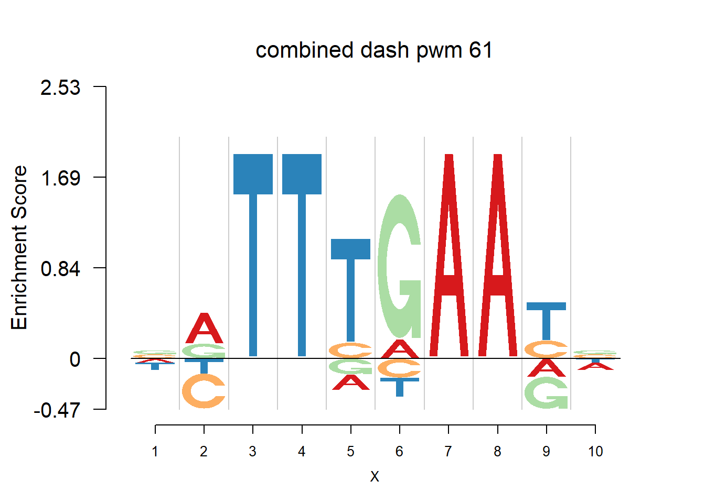

Last updated: 2017-08-03
Code version: 14f04a0
The database plantTFDB provides transcription factors of more than 160 species, including main lineages of green plants. What is special is that each species has specific background probability of A,C,G,T. Here, we firstly apply dash to the PFM and then plot the logo plot. Notice that only PWMs are provided so we first multiply the PWM with the nsites and the round to the nearest integer of each entry as the PFM. We compare the logo plots of the original PWM, the PWM from dash and the PWM from ‘aggregated’ dash. In the aggregated dash, we first combine all the PWMs of one species into a large matrix with four rows(of A,C,G,T) and \(N_p\) columns where \(N_p\) is the sum of the number of positions of each PWM.
We studied the TF binding motifs from 5 species with varying background probabilities, including
Vigna radiata Eucalyptus grandis Arabidopsis thaliana Actinidia chinensis.
library(Logolas)
# a function to get pwms, pfms, nsites etc from http://planttfdb.cbi.pku.edu.cn/
#'@ species: the name of speices, use abbreviation. Ach - Actinidia chinensis
#
plantTF=function(species){
library(dash)
#read all the TF names from the infomation page
nam=readLines(paste('http://planttfdb.cbi.pku.edu.cn/download/motif/',species,'_TF_binding_motifs_information.txt',sep=''))
#record the original pwm from the website as a list
pwm_original=list()
#record the transformed pfm as a list
pfm_indi=list()
#record the pwm after applying the dash
pwm_dash=list()
#a large mattrix combine all the pfms
pfm_cb=c()
#record the number of positions for each pwm
npos=c()
#record the number of sequences of each pfm
site=c()
for(i in 2:length(nam)){
#read each pwm file from the website
readfile=readLines(paste('http://planttfdb.cbi.pku.edu.cn/motif/Ach/',substring(nam[i],1,10),'.meme',sep = ''))
#extract the pwm
pwm=matrix(as.numeric(as.character(unlist(strsplit(readfile[13:(length(readfile)-3)],split = '\t')))),nrow = 4,byrow = F)
rownames(pwm)=c('A','C','G','T')
colnames(pwm)=1:ncol(pwm)
pwm_original[[i-1]]=pwm
#extract the number of sites
nsites=as.numeric(as.character(unlist(strsplit(readfile[12],split = ' '))[grep('nsites',unlist(strsplit(readfile[12],split = ' ')))+1]))
site[i-1]=nsites
#extract the background probabilities
bg=as.numeric(strsplit(readfile[8],split = ' ')[[1]][c(2,4,6,8)])
#
pfm=round(pwm*nsites)
pfm_cb=cbind(pfm_cb,pfm)
npos[i-1]=ncol(pwm)
pfm_indi[[i-1]]=pfm
pwm=dash(t(pfm),optmethod = 'mixEM',mode = bg)
pwm=t(pwm$posmean)
rownames(pwm)=c('A','C','G','T')
colnames(pwm)=1:ncol(pwm)
pwm_dash[[i-1]]=pwm
}
pwm_adash=dash(t(pfm_cb),mode=bg,optmethod = 'mixEM')
pwm_adash=t(pwm_adash$posmean)
pwm_agg=list()
for(i in 1:length(npos)){
pwm=pwm_adash[,1:npos[i]]
rownames(pwm)=c('A','C','G','T')
colnames(pwm)=1:ncol(pwm)
pwm_adash=pwm_adash[,-(1:npos[i])]
pwm_agg[[i]]=pwm
}
results=list(pfm=pfm_indi,pwm_original=pwm_original,pwm_dash=pwm_dash,pwm_cbdash=pwm_agg,bg=bg,nseq=site,npos=npos)
return(results)
}Then we show the logo plots and negative logo plots for the three PWMs from Actinidia chinensis. We pick the PWMs whose the number of sequences are small.
Ach=plantTF('Ach')
color_profile = list("type" = "per_row",
"col" = RColorBrewer::brewer.pal(4,name ="Spectral"))
set.seed(1)
for (i in sample(which(Ach$nseq<=20),5)){
logomaker(Ach$pwm_original[[i]],color_profile = color_profile,frame_width = 1,bg=Ach$bg,pop_name = paste('original pwm',i))
logomaker(Ach$pwm_dash[[i]],color_profile = color_profile,frame_width = 1,bg=Ach$bg,pop_name = paste('dash pwm',i))
logomaker(Ach$pwm_cbdash[[i]],color_profile = color_profile,frame_width = 1,bg=Ach$bg,pop_name = paste('combined dash pwm',i))
nlogomaker(Ach$pwm_original[[i]],color_profile = color_profile,frame_width = 1,logoheight = 'log_odds',bg=Ach$bg,control = list(logscale = 0.2, quant = 0.5,depletion_weight = 0.5),pop_name = paste('original pwm',i))
nlogomaker(Ach$pwm_dash[[i]],color_profile = color_profile,frame_width = 1,logoheight = 'log_odds',bg=Ach$bg,control = list(logscale = 0.2, quant = 0.5,depletion_weight = 0.5),pop_name = paste('dash pwm',i))
nlogomaker(Ach$pwm_cbdash[[i]],color_profile = color_profile,frame_width = 1,logoheight = 'log_odds',bg=Ach$bg,control = list(logscale = 0.2, quant = 0.5,depletion_weight = 0.5),pop_name = paste('combined dash pwm',i))
}
sessionInfo()R version 3.4.0 (2017-04-21)
Platform: x86_64-w64-mingw32/x64 (64-bit)
Running under: Windows 10 x64 (build 15063)
Matrix products: default
locale:
[1] LC_COLLATE=English_United States.1252
[2] LC_CTYPE=English_United States.1252
[3] LC_MONETARY=English_United States.1252
[4] LC_NUMERIC=C
[5] LC_TIME=English_United States.1252
attached base packages:
[1] stats graphics grDevices utils datasets methods base
other attached packages:
[1] dash_0.99.0 SQUAREM_2016.8-2 Logolas_1.1.2
loaded via a namespace (and not attached):
[1] Rcpp_0.12.11 digest_0.6.12 rprojroot_1.2
[4] grid_3.4.0 backports_1.0.5 git2r_0.18.0
[7] magrittr_1.5 evaluate_0.10 stringi_1.1.5
[10] LaplacesDemon_16.0.1 rmarkdown_1.6 RColorBrewer_1.1-2
[13] tools_3.4.0 stringr_1.2.0 parallel_3.4.0
[16] yaml_2.1.14 compiler_3.4.0 htmltools_0.3.5
[19] knitr_1.15.1 This R Markdown site was created with workflowr